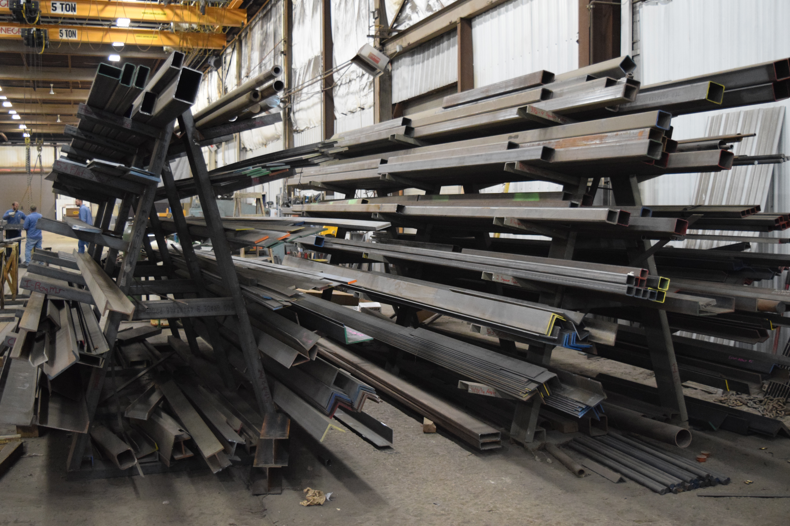
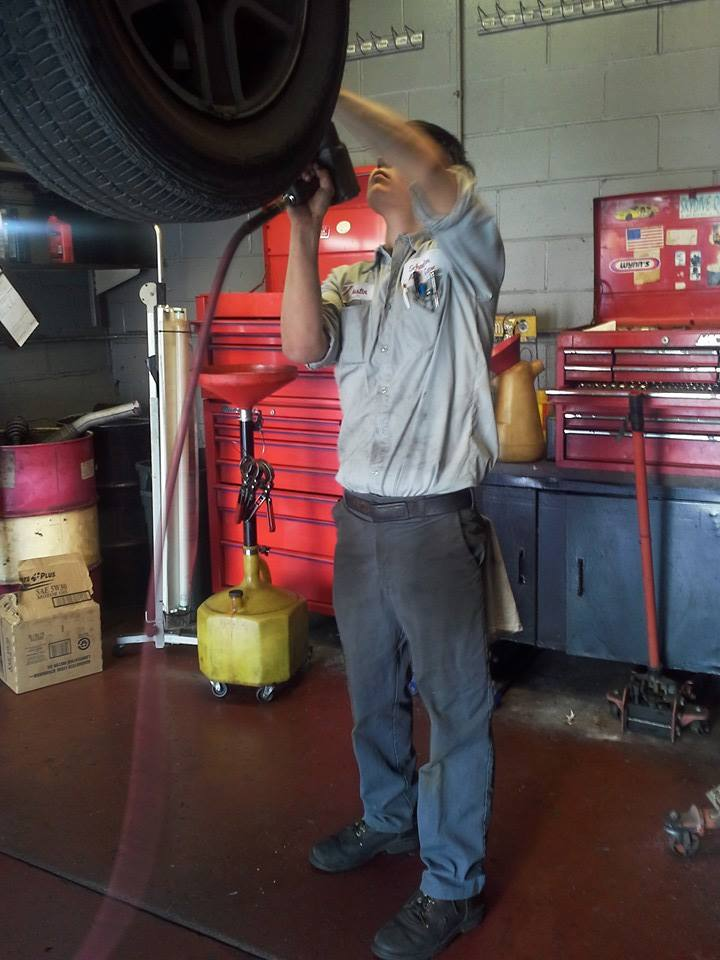

After quitting school I worked briefly in a sushi restaurant as a line cook and then making sushi behind the counter. While I love to cook, working in a kitchen is not for me, and while I love to eat sushi, I do not love to make it.
When I returned to St. Louis I began learning basic metal fabrication, helping to build steel barstools and tables for local bars and restaurants. I would cut steel square tubing to size, polish welds, and do minor tack welding.
Around this same time I also began working at an auto repair shop, where I began training as a mechanic. I spent almost eight years at this shop before transferring to another shop almost three years ago, where I am currently employed. I am ASC certified in Engine Performance, Brakes, and Steering and Suspension, and have signifcant experience and knowledge in most aspects of automotive service save body work. My days are spent doing anything from routine oil changes, to electrical or driveability diagnostics, to engine repair or replacement.
This course at Launchcode is my introduction into coding and IT (except for a C++ class I took in high school). I am ready for something different for a career and think coding and web design are things that I would be good at and enjoy. I'm still unsure where I may go in my coding journey but am looking forward to finding out.